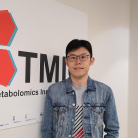

Meet Your Faculty
David Wishart
Distinguished University Professor of Biological Science and Computing Science
University of Alberta
Edmonton, AB, CA
David was one of the co-founders of the CBW in 1998. He has active research interests in the application of bioinformatics and statistics to a wide range of computational biology problems, from genomics to proteomics to metabolomics. In addition to running a large computational biology lab, David also operates a large wet lab (analytical chemistry, molecular biology, nanotechnology, cell biology, structural biology) supported by its own fabrication shop and electrical engineering group.
Jianguo (Jeff) Xia
Canada Research Chair in Bioinformatics and Big Data Analysis
Institute of Parasitology, McGill University
Montréal, QC, CA
Jeff has a broad background in medicine, immunology and bioinformatics. He has been involved in CBW since 2011. Jeff has active research interests in metabolomics, transcriptomics, microbiomics and multi-omics integration, with a key focus on democratizing omics data analytics via web/cloud - based platforms and visualization.
Zhiqiang Pang
PhD Candidate
Institute of Parasitology, McGill University
Montréal, QC, CA
Zhiqiang is a PhD candidate in the Xia Lab at McGill University. He graduated from Jilin University with his Bachelor’s degree from School of Pharmaceutical Sciences (2016) and Master’s degree from the College of Basic Medical Sciences (2019). His research project is about optimizing metabolomics raw data processing to gain deep biological insight on infectious diseases, cancer and host-microbiome interactions.
Jessica Ewald
Postdoctoral Fellow
Institute of Parasitology, McGill University
Montréal, QC, CA
Jessica is a postdoctoral fellow in the Xia Lab at McGill University where she is currently studying multi-omics integration. Her background includes an undergraduate degree in Environmental Engineering and Applied Mathematics (Harvard College, 2017) and a PhD in Bioinformatics (McGill University, 2022). Overall, her research has focused on using computational approaches to understand the impact of environmental contaminants on human and ecosystem health.
Lun (Allen) Zhang

Research Associate
Department of the Biological Sciences, University of Alberta
Edmonton, AB, CA
Dr. Lun Zhang is a Research Associate in the Wishart lab at the University of Alberta. Since joining the lab in 2017, he has mainly focused on the development of LC-MS-based metabolomics assays and software. He also participated in multiple translational medicine research projects, such as discovering the diagnostic biomarkers for lung cancer, colorectal cancer and polyps.
Mark Berjanskii
Research Associate
Department of the Biological Sciences, University of Alberta
Edmonton, AB, CA
Mark obtained a Ph.D. in Biochemistry at University of Missouri-Columbia, USA. Mark’s research interests include NMR metabolomics, bioinformatics, protein NMR structure determination, interactions, misfolding, and dynamics. Between 1996 and 2004, he worked as a member of several research teams that studied the Hsp70-Hsp40 chaperone system. Mark joined Dr. Wishart’s group at University of Alberta in 2004. Between 2005 and 2013, Mark studied prion proteins that, when misfolded, cause Mad Cow Disease in cattle and similar Creutzfeldt-Jakob Disease in humans. Since 2004, he has been involved in developing several programs for analysis of protein structure and dynamics, such as Random Coil Index, Preditor, GeNMR, CS23D, PROSESS, Resolution-by-proxy, and Gamdy, as well as bioinformatic analysis and NMR metabolomics.
Michelle Brazas

Acting Scientific Director
Canadian Bioinformatics Workshop (CBW)
Toronto, ON, CA
Dr. Michelle Brazas is the Associate Director for Adaptive Oncology at the Ontario Institute for Cancer Research (OICR), and acting Scientific Director at Bioinformatics.ca. Previously, Dr. Brazas was the Program Manager for Bioinformatics.ca and a faculty member in Biotechnology at BCIT. Michelle co-founded and runs the Toronto Bioinformatics User Group (TorBUG) now in its 11th season, and plays an active role in the International Society of Computational Biology where she sits on the Board of Directors and Executive Board.
Nia Hughes

Program Manager, Bioinformatics.ca
Ontario Institute for Cancer Research (CBW)
Toronto, ON, CA
Nia is the Program Manager for Bioinformatics.ca, where she coordinates the Canadian Bioinformatics Workshop Series. Prior to starting at OICR, she completed her M.Sc. in Bioinformatics from the University of Guelph in 2020 before working there as a bioinformatician studying epigenetic and transcriptomic patterns across maize varieties.